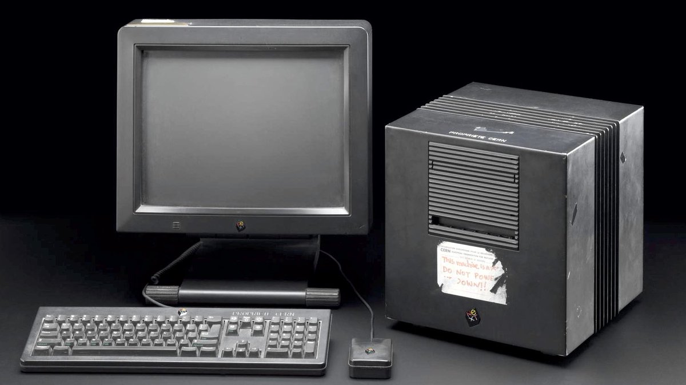

A lo largo del tiempo, las máquinas que fueron utilizadas en servidores fueron evolucionando a medida que los avances tecnológicos de la época lo permitieron. A continuación, se presentan algunos de los hitos más importantes con respecto al desarrollo de los servidores en la historia:
1981 - IBM Virtual Machine, LISTSERV:
El primer servidor de correo electrónico fue instalado en un mainframe IBM Virtual Machine. El software de gestión fue LISTSERV, y la conexión se daba sobre BITNEX. LISTSERV facilitó la comunicación por correo electrónico entre grupos, y también se generaron los primeros “spams” y “trolls”.
1991 - NeXTCube, primer servidor web:
La red informática mundial, o World Wide Web, se originó en en una workstation creada por la empresa NeXT llamada NeXTCube. En ella, Tim Berners-Lee y Robert Cailliau, pertenecientes al CERN de Ginebra, pusieron en marcha la primera página web y desarrollaron el primer navegador y editor de páginas web: el WorldWideWeb.
1993 - ProLiant, primer servidor en rack:
ProLiant Series fue desarrollado por Compaq, en 1993, y su innovación fue la posibilidad de poder “apilar” servidores en estructuras llamadas racks. Cada rack contiene varios slots de montaje para servidores que cumplan con las dimensiones, pudiendo contener muchos servidores en un espacio relativamente reducido y organizado.
Si bien esto ayudó a las compañías grandes, se debieron desarrollar técnicas especializadas de enfriamiento para los cuartos en los que se instalan estos racks, a causa del calor acumulado que producen los componentes electrónicos de los servidores.
1998 - El primer servidor de Google:
Larry Page y Sergey Brin, fundadores de Google, corrieron su primer motor de búsqueda en servidores Dual Pentium II de 300 MHz, 512 MB de ram y 9 discos duros de 9 GB. También contaban con una workstation Sun Ultra II, una F50 IBM RS/6000 y 18 discos duros de 9 GB extra. Todo este conjunto formaba la totalidad del hardware propiedad de Google por el año 1998, y la mayor parte fue donada por empresas como Intel e IBM.
2001 - Primer servidor en formato blade:
Christopher Hipp y David Kirkeby patentaron los servidores en formato “blade” en el año 2001. En contraste con los servidores en rack, este nuevo formato permitía optimizar el espacio que ocupa la estructura y sus componentes, además de incorporar un sistema de enfriamiento mejorado y mejor hardware para las conexiones en cada chasis para cada servidor individual. Este avance tecnológico supuso un aumento en la eficiencia en centros de datos, permitiendo un uso más efectivo y estratégico de sus recursos de cómputo.
2005 - Aparición de varias técnicas de administración de servidores:
Luego de la invención de los servidores blade, los avances estuvieron centrados en incrementar la eficiencia y rendimiento de los servidores, creándose nuevo hardware para este propósito. Por ejemplo, el uso de clusters de servidores permite que si uno de los servidores que lo componen sufre un desperfecto, la carga de trabajo se traslade a otro, pudiéndose evitar tiempos muertos donde todo el sistema está caído.
2013 - El primer servidor definido por datos (software-defined) del mundo:
Desarrollado por HP, el sistema Moonshot es una infraestructura optimizada para cargas de trabajo altas. Corre en microprocesadores de baja energía, reduciendo el consumo y el espacio que ocupan.
Alrededor de este tiempo, empezaron a surgir los servidores virtuales, o servidores nube, que tienen las mismas capacidades que los servidores hardware, pero incluyen software de virtualización que divide un mismo servidor físico en varios virtuales. Las empresas pueden optar por contratar uno de estos servidores nube si tienen cargas de trabajo muy variables, y pueden ahorrarse las complicaciones de tener un servidor físico propio.
Actualidad y el futuro de los servidores:
A medida que los centros de datos crecen para abordar infraestructuras de IT más diversas, los servidores deberán evolucionar en términos de capacidad, rendimiento y eficiencia. Según la International Data Corporation (IDC), el mercado mundial de servidores reportó una ganancia de 24,5 mil millones de dólares.
El hardware de los servidores seguramente continuará reduciéndose en tamaño para ser más compacto y simplificado, haciendo mucho más énfasis en la virtualización.
 ProLiant Series fue desarrollado por Compaq, en 1993, y su innovación fue la posibilidad de poder “apilar” servidores en estructuras llamadas racks. Cada rack contiene varios slots de montaje para servidores que cumplan con las dimensiones, pudiendo contener muchos servidores en un espacio relativamente reducido y organizado.
ProLiant Series fue desarrollado por Compaq, en 1993, y su innovación fue la posibilidad de poder “apilar” servidores en estructuras llamadas racks. Cada rack contiene varios slots de montaje para servidores que cumplan con las dimensiones, pudiendo contener muchos servidores en un espacio relativamente reducido y organizado.